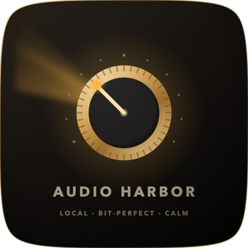
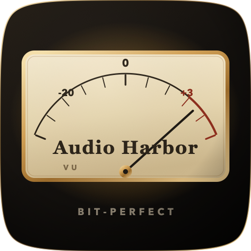

A quiet audiophile player for music you already own. Bit-perfect Exclusive and DoP on Mac. Load the AU and AUv3 plugins you already have — on the Deck, not in another host.

No streaming · No account · AU + AUv3 on the Deck · Shared by default · Exclusive when the DAC is ready
Audiophile software loves jargon. We don’t. If you are unsure, leave Shared on — that is the daily driver, on every device.
Plays like any other app. Calls, YouTube, speakers, Bluetooth, AirPlay still work. This is the default on Mac, and the only path on iPad and iPhone.
Mac only. Audio Harbor takes over the DAC so the file’s sample rate stays as-is. Other apps go silent. Skip this for laptop speakers and Bluetooth.
Mac only, for DSF. Sends DSD as DoP when the DAC understands it. If it cannot, Audio Harbor converts to ordinary PCM so the track still plays.
Effects on the Deck rack switch you back to Shared until you clear them. Exclusive stays the empty-rack, bit-perfect path — we will not pretend otherwise.
No server. No login. Point at the folders you already keep, and play.
Connect the discs, NAS mounts, or iCloud folders that hold your library. Audio Harbor indexes them locally — titles, artwork, search — and stays out of the cloud.
Browse by album, artist, or folder. Queue an album onto the Deck. Gapless PCM. The format badge tells you what is actually leaving the app.
On Mac, with a USB DAC you trust, switch Output to Exclusive. Sample rate follows the file. Built-in speakers stay on Shared — as they should.
The player is a listening room, not a mixer. Catalogue, Deck, Settings. Large artwork. Analog VU when the music is moving. Nothing competing for the downbeat.

Features earn their place. If it does not help you hear the file, it does not sit on the Deck.
Security-scoped bookmarks so the library survives a restart. Incremental index, search, rebuild when you ask — not a background circus.
Hog mode, sample-rate match, 24-bit HAL path. Exclusive is for a known DAC. We will not silently resample on that path.
DSF via DoP when the Mac DAC can take it. Otherwise a clean PCM conversion, labelled in the UI. No fake 1-bit into laptop speakers.
AUv3 on Mac, iPad, and iPhone. Classic AU on Mac. The plugins you already own — EQ, room correction, headphone correction — insert on the player. See the rack.
Album, artist, folder, playlists, queue. Lock screen and media keys. The music is yours; we do not recommend a lifestyle.
No streaming services. No DRM Apple Music library. No telemetry of what you play. Privacy is the default, not a setting.
Audio Harbor is a host. Load the Audio Units you already use in Logic, GarageBand, or AUM — as inserts on the Deck, while the record plays.
Any stereo Audio Unit v3 effect. The same extensions other Apple hosts see. Add from the rack, open the plugin’s own editor, keep the settings after quit.
The Audio Units already on the Mac — Apple’s, third-party, the ones Logic and AU Lab list. Same insert path as AUv3. Mac-only, because that is where classic AU lives.
A loaded rack uses the system mixer so plugins can run. Exclusive and DoP stay bit-perfect with an empty rack. Clear the inserts when you want the DAC raw.
The rack sits under Now Playing. Search the installed units, drop one in, reorder, bypass. No separate “FX app.”
Edit opens the AU view — knobs, graphs, whatever the vendor shipped. Not a generic parameter list unless that is all the unit has.
Chain, bypass, and plugin state are stored with the app. Quit and reopen: the same EQ, the same room correction.
Stereo inserts only. Some vendor AUs expect a DAW host and will refuse a player graph — we drop those rather than crash. Waves-class units are the usual example.
The files on your disks — not a converter suite in the main path.
FLAC · ALAC · WAV · AIFF · AAC/M4A · MP3. Gapless where the format allows. Exclusive keeps 24-bit PCM bit-perfect on Mac.
DSF through DoP or DSD→PCM. If the DAC cannot do DoP, you still hear music — and the path says so. DFF probe first; full DFF next.
No SACD ISO, no 768 kHz upsampling theatre, no Qobuz/Tidal. Those dilute the local-first promise.
The Deck shows the format and the path — Shared, Exclusive, DoP, or Shared · FX — so you are never guessing what left the app.
Same catalogue language everywhere. Exclusive and DoP are Mac strengths — we say that on the box, not in a footnote.
Daily driver. Folder watch, Exclusive hog + rate match, DoP into a USB DAC, AUv3 and classic AU on the Deck, keyboard, media keys.
The same Deck and library, laid out for a larger canvas. Shared playback. AUv3 inserts on the rack — headphones, speakers, AirPlay.
Open the folder, find the album, listen. Shared session. AUv3 on the rack if you want it. Exclusive is not faked on a phone DAC.
Your folders. Your files. No cloud required.
macOS first · iPad and iPhone with the same soul. Local files, AU and AUv3 on the Deck, no account. Source is on GitHub while we finish the Mac App Store listing.
View on GitHub